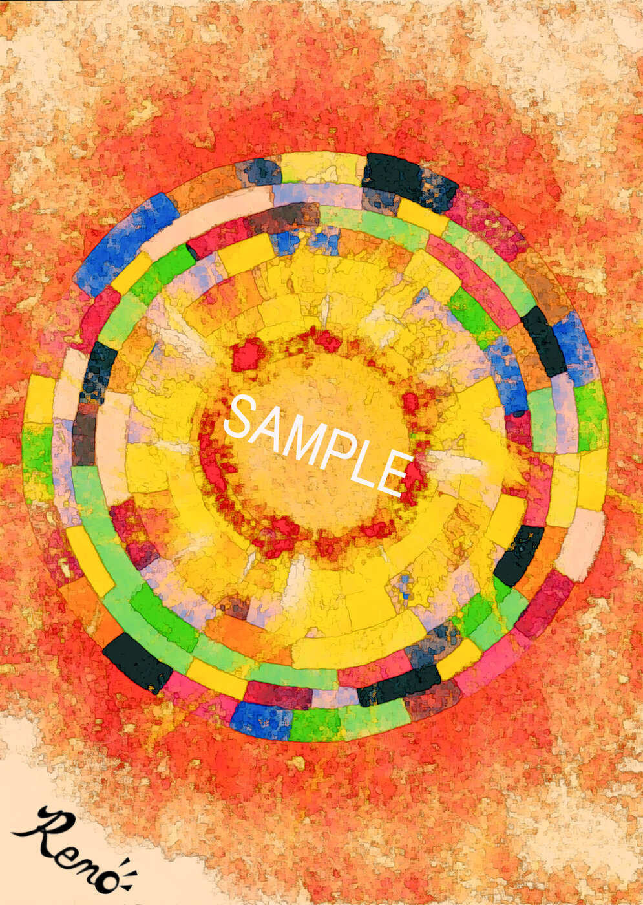
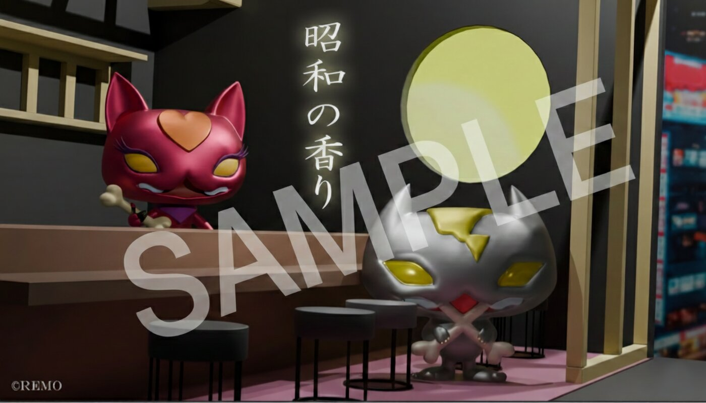
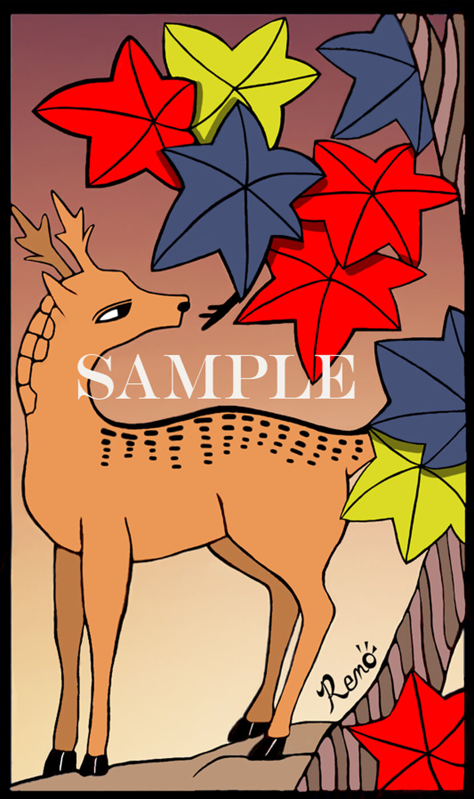
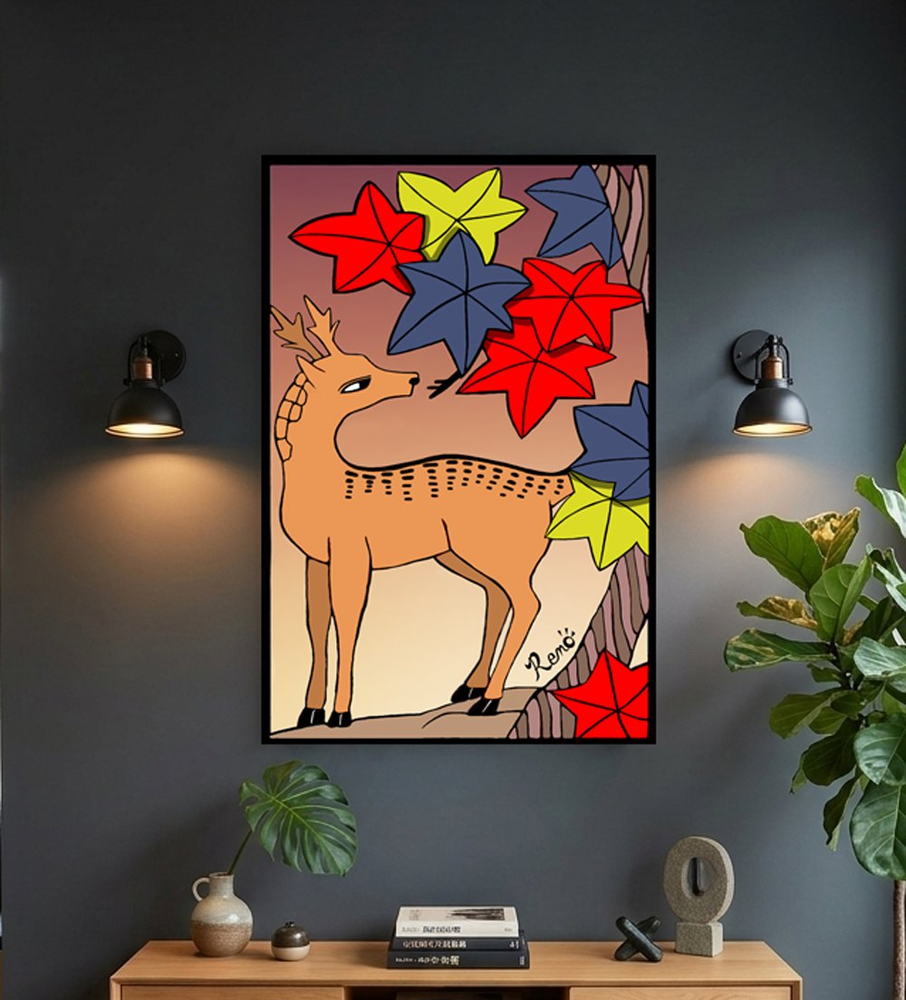
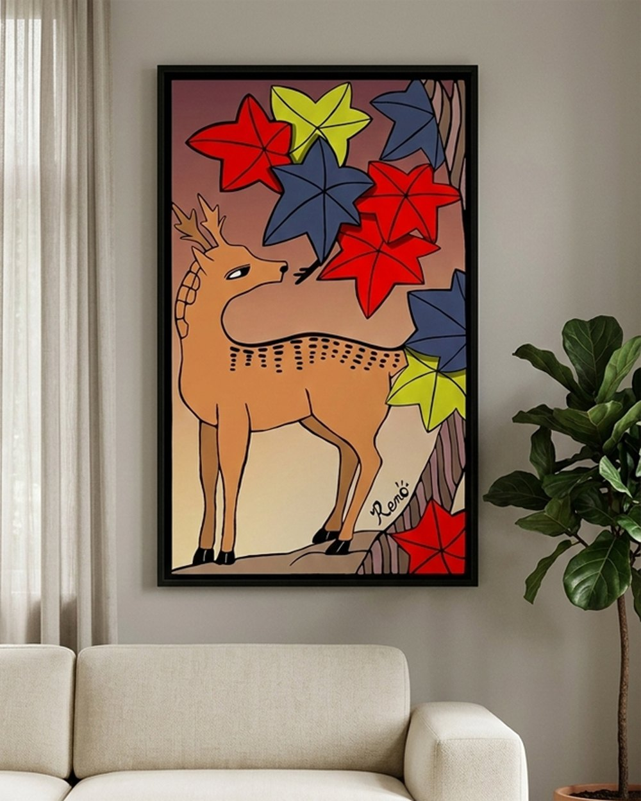

円形の抽象画(Remo)
色彩の分割と中心へ向かう炎のようなグラデーション。
7F ― GALLERY WORKS
2D WORKS ABROAD
フランスに拠点を置くオンラインギャラリー「Art Majeur」にて、2DCG作品を出品しています。抽象、キャラクターの世界観、和のモチーフまで、平面表現においても、素材やジャンルを問わない制作を行っています。

円形の抽象画(Remo)
色彩の分割と中心へ向かう炎のようなグラデーション。

昭和の香り(REMO)
レトロな空間に息づくキャラクターたちの物語。世界観そのものをデザインする試み。

鹿と紅葉(Remo)
花札の絵柄をアレンジ。

飾った例(落ち着いた部屋)
AIで生成した部屋に、作品を壁掛けで飾ったイメージ。照明の下での見え方を確認できる。

飾った例(明るいリビング)
同じ作品を、明るいリビングに飾ったイメージ。部屋の雰囲気で、作品の印象がどう変わるかが分かる。
このジャンルのお問い合わせ・お仕事依頼は、件名にジャンルを記入の上、ここからお願いします。
お問い合わせする メールが開かない場合は、こちらへ直接お送りください:sun00shigeki@yahoo.co.jp